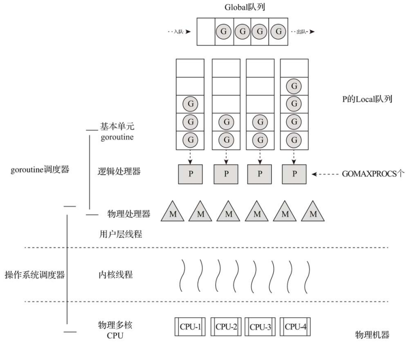

1. goroutine调度器
- Go采用用户层轻量级线程来解决这些问题，并将之称为goroutine。
- 由于一个goroutine占用资源很少，一个Go程序中可以创建成千上万个并发的goroutine。
- 而将这些goroutine按照一定算法放到CPU上执行的程序就称为goroutine调度器（goroutine scheduler）。
- 一个Go程序对于操作系统来说只是一个用户层程序，操作系统眼中只有线程， goroutine的调度全要靠Go自己完成。
2. goroutine调度模型和演进过程
2.1. G-M模型
Go 1.0版本中实现了一个简单的goroutine调度器，此调度器使用 G-M模型 ：每个goroutine对应于运行时中的一个抽象结构——G（goroutine），而被视作“物理 CPU”的操作系统线程则被抽象为另一个结构——M（machine）
但是这个调度器存在诸多问题：
- 单一全局互斥锁（Sched.Lock）和集中状态存储的存在导致所有goroutine相关操作（如创建、重新调度等）都要上锁。
- goroutine传递问题：经常在M之间传递“可运行”的goroutine会导致调度延迟增大，带来额外的性能损耗。
- 每个M都做内存缓存，导致内存占用过高，数据局部性较差。
- 因系统调用（syscall）而形成的频繁的工作线程阻塞和解除阻塞会带来额外的性能损耗。
2.2. G-P-M模型
有人曾说过：
“计算机科学领域的任何问题都可以通过增加一个间接的中间层来解决。”
发现了G-M模型的不足后，Dmitry Vyukov亲自操刀改进了goroutine调度器，在Go 1.1版本中实现了G-P-M调度模型和work stealing算法，这个模型一直沿用至今，如图所示：

2.3. 抢占式调度
Dmitry Vyukov又提出了“Go抢占式调度器设计”（Go Preemptive Scheduler Design），并在Go 1.2版本中实现了抢占式调度。
- 这个抢占式调度的原理是在每个函数或方法的入口加上一段额外的代码，让运行时有机会检查是否需要执行抢占调度。
- 这种协作式抢占调度的解决方案只是局部解决了“饿死”问题，对于没有函数调用而是纯算法循环计算的G，goroutine调度器依然无法抢占。
2.4. NUMA调度模型
Dmitry Vyukov在2014年9月提出了一个新的设计草案文档“NUMA‐aware scheduler for Go”，作为对未来goroutine调度器演进方向的一个提案，不过这个提案至今也没有被列入开发计划。
2.5. 其他优化
- Go运行时已经实现了netpoller，这使得即便G发起网络I/O操作也不会导致M被阻塞（仅阻塞G），因而不会导致大量线程（M）被创建出来。
- Go开发团队的Ian Lance Taylor在Go 1.9版本中增加了一个针对文件I/O的Poller，它可以像netpoller那样，在G操作那些支持监听的 （pollable）文件描述符时，仅阻塞G，而不会阻塞M。
3. 对goroutine调度器原理的进一步理解
3.1. G、P、M
- G：代表goroutine，存储了goroutine的执行栈信息、goroutine状态、goroutine的任务函数等。另外G对象是可重用的
- P：代表逻辑processor，P的数量决定了系统内最大可并行的G的数量（前提：系统的物理CPU核数>=P的数量）。P中最有用的是其拥有的各种G对象队列、链表、一些缓存和状态。
- M：代表真正的执行计算资源。在绑定有效的P后，进入一个调度循环；而调度循环的机制大致是从各种队列、P的本地运行队列中获取G，切换到G的执行栈上并执行G的函数，调用goexit做清理工作并回到M。
// $GOROOT/src/runtime/runtime2.go
type g struct {
stack stack
sched gobuf
goid int64
gopc uintptr
startpc uintptr
...
}
type p struct {
lock mutex
id int32
status uint32
mcache *mcache
racectx uintptr
// 处于可运行状态的goroutine队列，访问队列⽆须加锁
runqhead uint32
runqtail uint32
runq [256]guintptr
runnext guintptr
// 可重用的G (状态 == Gdead)
gfree *g
gfreecnt int32
...
}
type m struct {
g0 *g
mstartfn func()
curg *g
...
}
3.2. G被抢占调度
- 与操作系统按时间片调度线程不同，Go中并没有时间片的概念。G是被抢占调度的。
- 在Go程序启动时，运行时会启动一个名为 sysmon 的M（一般称为监控线程），该M的特殊之处在于它无须绑定P即可运行（以g0这个G的形式）。
- sysmon 每20us~10ms启动一次，主要完成如下工作：
- 释放闲置超过5分钟的span物理内存；
- 如果超过2分钟没有垃圾回收，强制执行；
- 将长时间未处理的netpoll结果添加到任务队列；
- 向长时间运行的G任务发出抢占调度；
- 收回因syscall长时间阻塞的P；
3.3. channel阻塞或网络I/O情况下的调度
- 如果G被阻塞在某个channel操作或网络I/O操作上，那么G会被放置到某个等待队列中，而M会尝试运行P的下一个可运行的G；
- 如果此时P没有可运行的G供M运行，那么M将解绑P，并进入挂起状态；
- 当I/O操作完成或channel操作完成，在等待队列中的G会被唤醒，标记为runnable，并被放入某个P的队列中，绑定一个M后继续执 行；
3.4. 系统调用阻塞情况下的调度
- 如果G被阻塞在某个系统调用上，那么不仅G会阻塞，执行该G的M也会解绑P（实质是被sysmon抢走了），与G一起进入阻塞状态；
- 如果此时有空闲的M，则P会与其绑定并继续执行其他G；
- 如果没有空闲的M，但仍然有其他G要执行，那么就会创建一个新M；
- 当系统调用返回后，阻塞在该系统调用上的G会尝试获取一个可用的P，如果有可用P，之前运行该G的M将绑定P继续运行G；
- 如果没有可用的P，那么G与M之间的关联将解除，同时G会被标记为runnable，放入全局的运行队列中，等待调度器的再次调度；
4. 调度器状态的查看方法
（略）